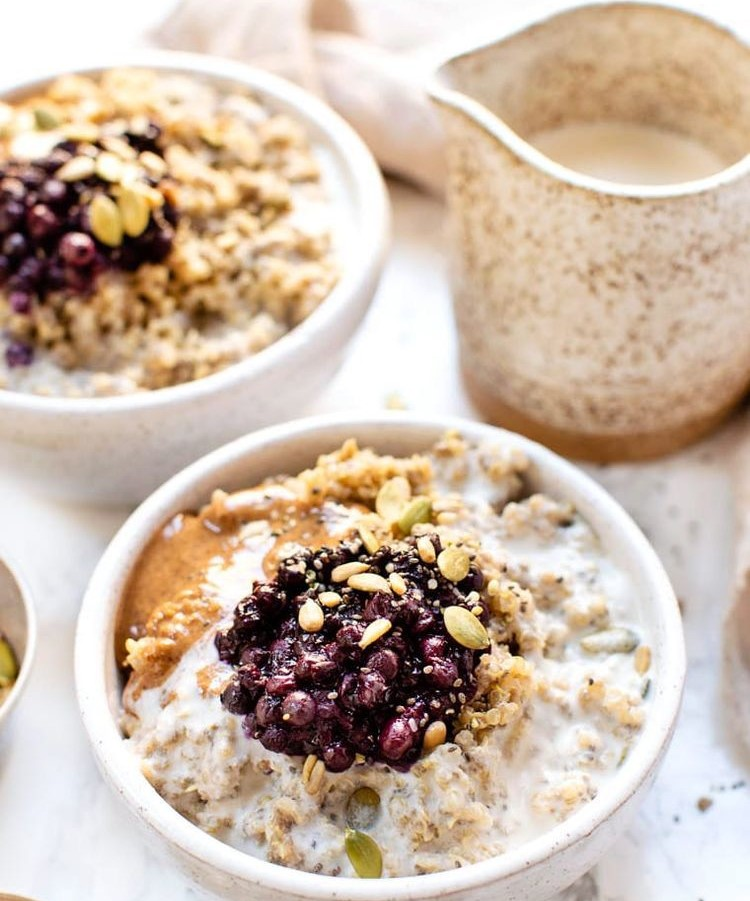

PORRIDGE NEL REGNO UNITO
Il porridge è il piatto tradizionale della colazione inglese. Si tratta di una zuppa d'avena, un piatto molto nutriente, che fornisce al nostro organismo energia a lungo termine.
INGREDIENTI:
- fiocchi d'avena
- acqua
- latte
- sale
- frutta fresca
- frutta secca
- cioccolato
- miele
PORRIDGE IN ISLANDA
Anche in islanda, per combattere il freddo dell’isola, per colazione viene preparato un piatto caldo, chiamato Hafragrautur, un porridge a base di farina d’avena.
INGREDIENTI
- farina d'avena
- acqua
- latte
- zucchero di canna
- uvetta
- semi di melone
- noci
PORRIDGE IN CINA
Il porridge cinese è chiamato Congee e viene fatto con la farina di riso. É Il pasto preferito per la prima colazione dai cinesi e può essere accompagnato da vari alimenti.
INGREDIENTI
- riso
- acqua
- pollo\tacchino
- cipolla e aglio
- zenzero
- ciambella fritta
- uovo d’anatra/
- coriandolo